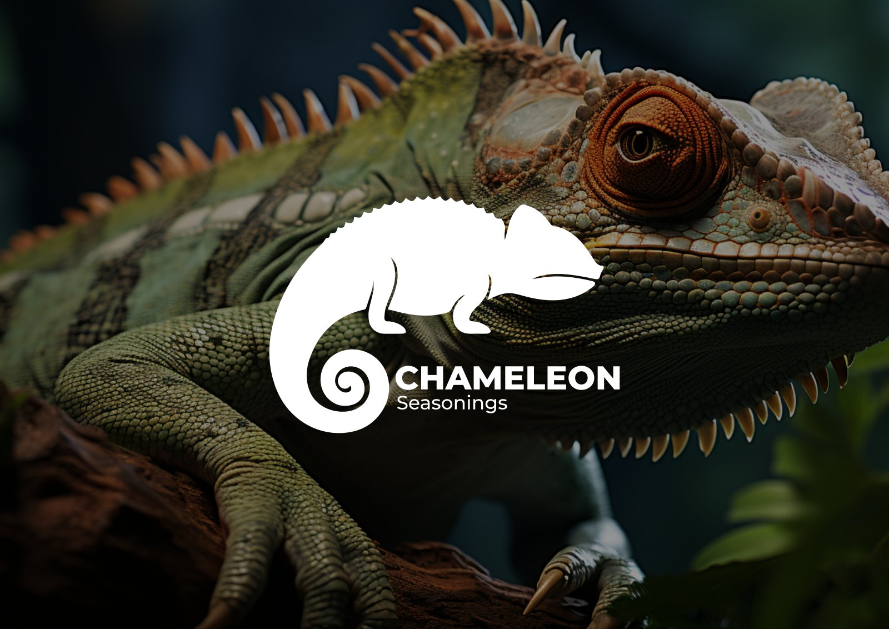
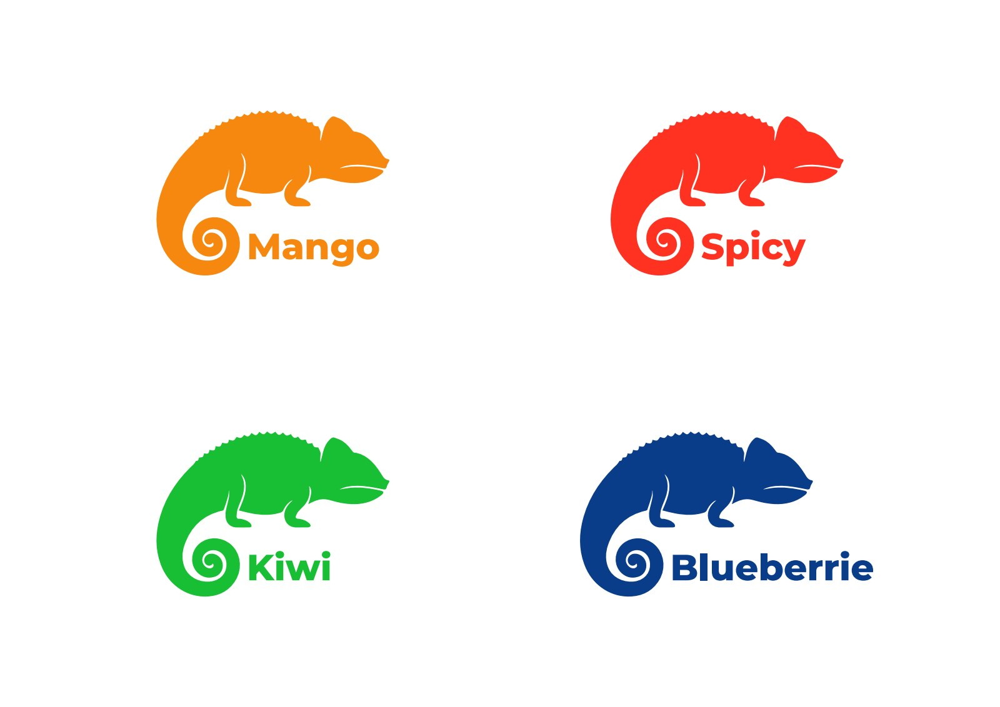
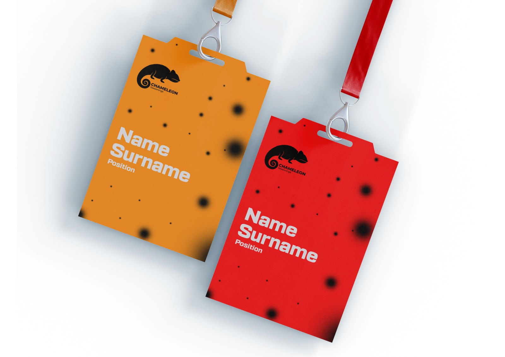
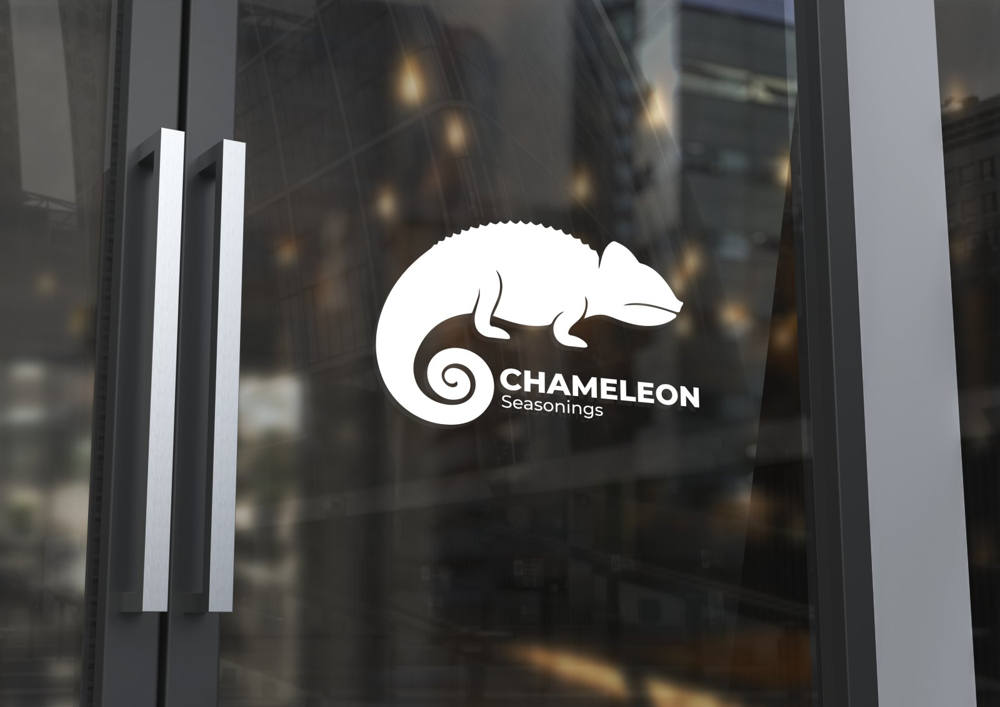
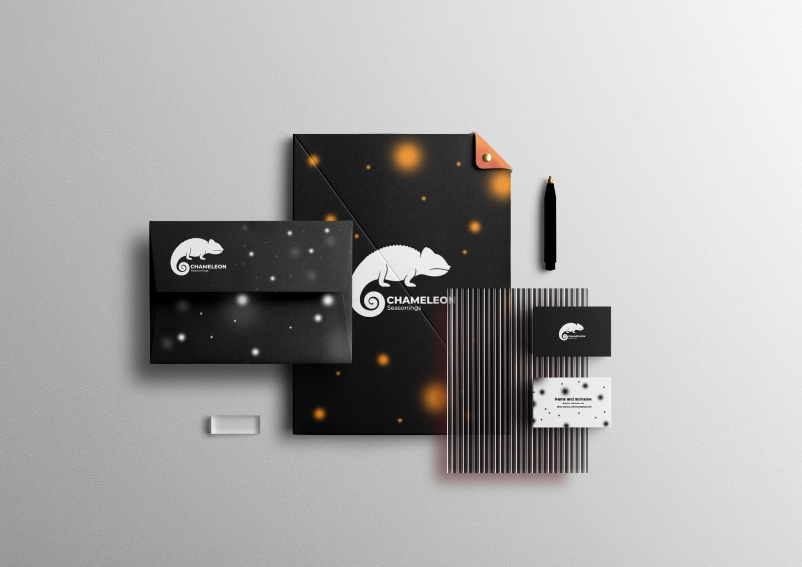
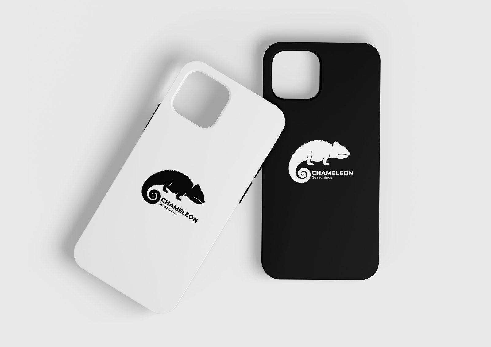
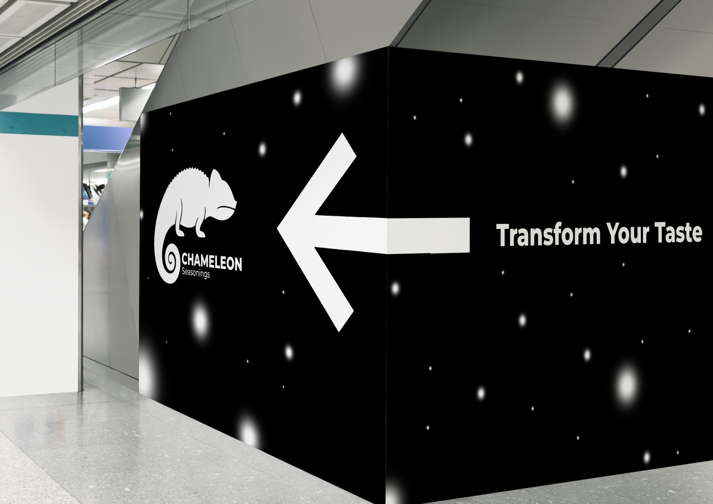

Chameleon Seasonings.
A vibrant identity built around transformation, versatility and the world of flavor.

A connected
visual world.
The chameleon becomes the central symbol of a seasoning brand shaped by variety. Color distinguishes the blends, while a consistent logo system connects packaging, stationery and physical brand applications.
Project scope
- Logo & color system
- Packaging design
- Stationery & brand applications






